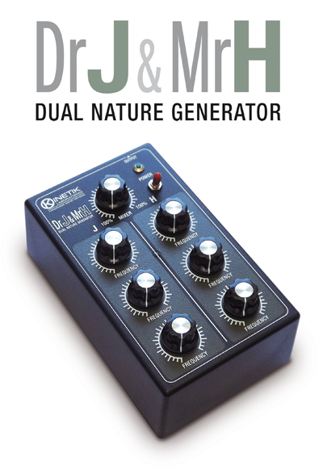

DR.JEKYLL & MR.HYDE
Production year: 2013 Dr.Jekyll & Mr.Hyde is a generator suffering from dissociative identity disorder. J&H is formed by two distinct mixable circuit voices, the Jekyll's one is warm, firm and comforting, the other is harsh, noisy and sometimes unpredictable: the Hyde…

Production year: 2013
Dr.Jekyll & Mr.Hyde is a generator suffering from dissociative identity disorder.
J&H is formed by two distinct mixable circuit voices, the Jekyll's one is warm, firm and comforting, the other is harsh, noisy and sometimes unpredictable: the Hyde side.
Each voice has three oscillators with respecting FREQUENCY control.
The MIXER potentiometer controls the voices mix output level on a 1/4" jack.
The control panel includes a On-Off switch with corresponding led. The whole is powered by an external power supply, providing 9vDC on 2.1mm barrel jack, negative tip.